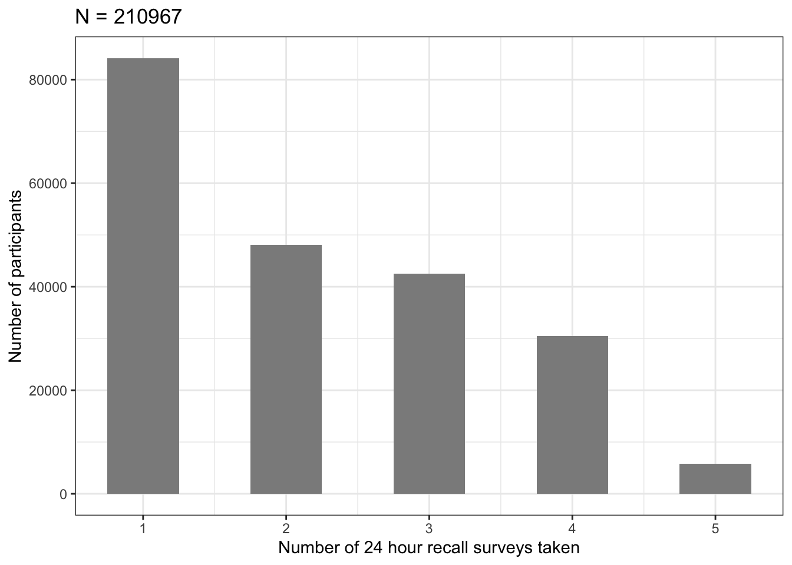
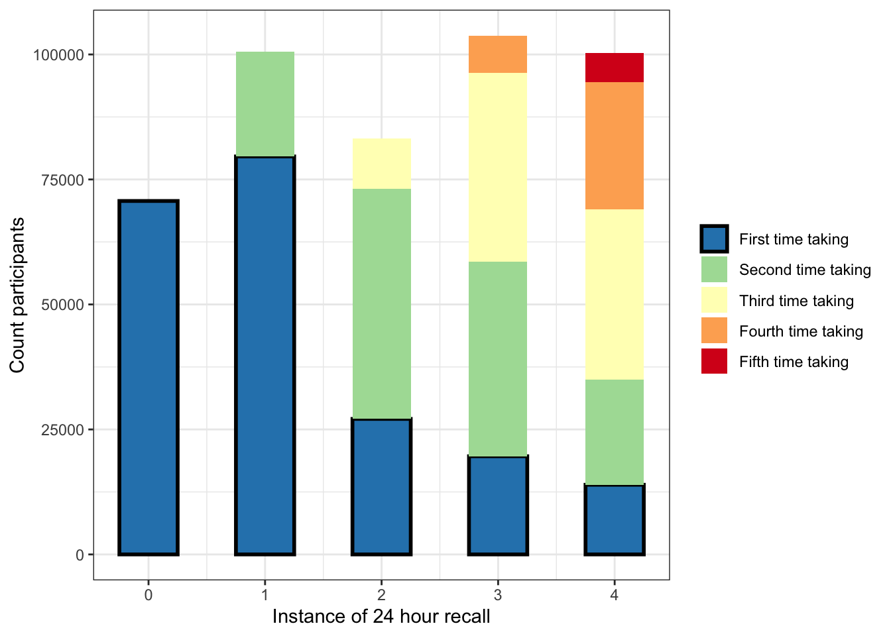
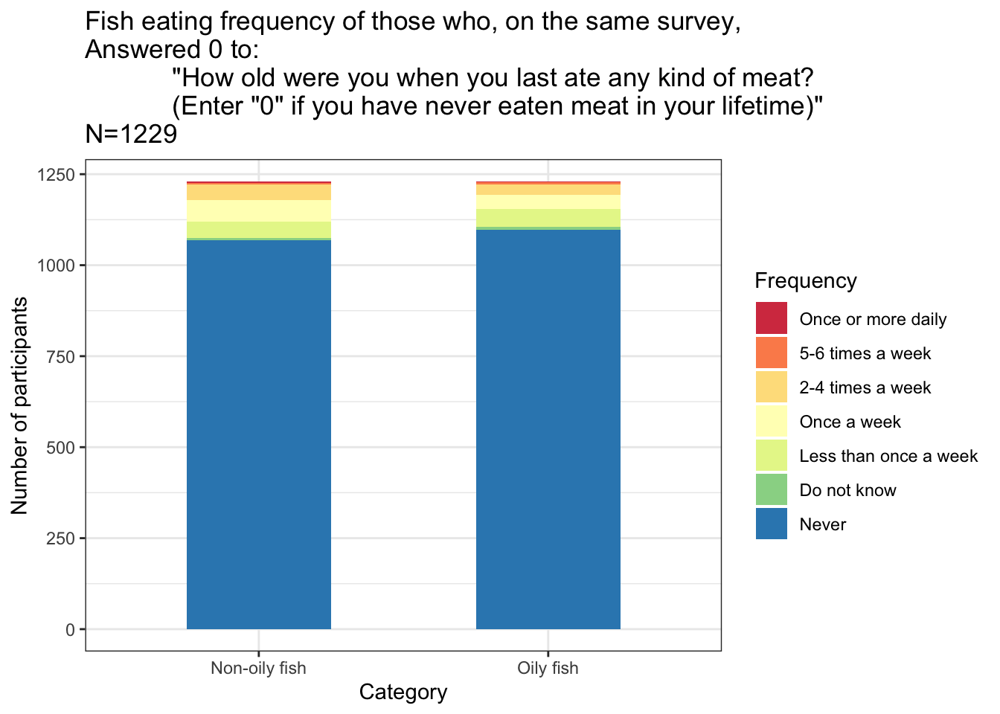

Find the self-identified vegetarians in the UK Biobank dietary recall survey instances
Assess their consistency with other parts of the dietary survey.
Obtain a list of high quality vegetarians to use for subsequent analyses.
Veg5yr1 is the vegetarian variable used in the main analysis. Being categorized as a vegetarian means participants adhered to all four of these criteria:
Self-identified as a vegetarian or vegan the first time they were asked on a 24HR survey
Didn’t indicate eating any meat or fish on that same first 24HR survey
Indicated no major dietary changes over past 5 years
No meat or fish eating indicated on initial assessment
The biomarker data that we use in this analysis was taken at the IA. Therefore this is a combination of several columns that describe the quality of vegetarianism at that same time point.
There are also some plots here showing general qualities of the 24HR recall survey that were done in my data exploration that don’t factor into the main analysis (i.e., Plot: How many repeat participants were in each instance of the 24HR? , Plot: Percent consistent vegetarians vs number of recall survey’s taken across 3 years, [Identify those who were vegetarian at two consecutive 24HR instances])
suppressMessages(silent <- lapply(
c("plyr", "dplyr", "tidyverse", "data.table", "vroom", "knitr","kableExtra"),
library, character.only=T))
table = function (..., useNA = 'always') base::table(..., useNA = useNA)
mutate_when <- function(data, ...) {
dots <- eval(substitute(alist(...)))
for (i in seq(1, length(dots), by = 2)) {
condition <- eval(dots[[i]], envir = data)
mutations <- eval(dots[[i + 1]],
envir = data[condition, , drop = FALSE])
data[condition, names(mutations)] <- mutations
}
data
}## [1] 502527 5172bd=vroom("/Users/mike/Documents/R_files/UKBpheno/pheno/ukbXXXXX.tab", delim="\t", show_col_types = FALSE)
bd=as_tibble(bd)
source("src/components/ukbXXXXX_factordata.R") #file provided by UKB "ukbXXXXX_loaddata.R" without the loading part, to label the responses in survey questions
dim(bd)“daycols” are days of the week that the 24HR was taken, i.e. a proxy for whether the survey was completed. In these columns, NA=survey wasn’t taken that instance.
We change the days of the week to 1 because we’re not interested in which day it actually was.
#First, remove withdrawn participants
withdrawn=read.csv("src/components/w48818_20220222.csv", header = FALSE)
nrow(withdrawn)## [1] 114bd=bd[!(bd$f.eid %in% withdrawn$V1), ]
#Identify columns with days of the week
daycols<-c("f.20080.0.0", "f.20080.1.0", "f.20080.2.0",
"f.20080.3.0", "f.20080.4.0")
bd1<-bd[,c("f.eid", daycols)]
#Change all the factors to characters
bd1[,daycols]<-sapply(bd1[,daycols], as.character)
#Change NA's to zeros and days to 1's
bd1[,daycols][(is.na(bd1[,daycols]))]<-"0"
bd1[,daycols][bd1[,daycols]!="0"] <-"1"
#Change these back to numeric
bd1[,daycols]<-sapply(bd1[,daycols], as.integer)
#Now make a new column, everyone with rowSums zero never took recall
#and those with >0 took it at least once
bd1$times_taken_24HR<-rowSums(bd1[,daycols])
bd1$ever_took_24HR<-0
bd1$ever_took_24HR[bd1$times_taken_24HR>0]<-1
bd1$times_taken_24HR[bd1$times_taken_24HR==0]<-NA
sum(bd1$ever_took_24HR)## [1] 210967#TP = time point
colnames(bd1)<-c("IID", "RecallTP0", "RecallTP1",
"RecallTP2","RecallTP3","RecallTP4",
"times_taken_24HR", "ever_took_24HR")
#Optional save here
#write.csv(bd1, "UKB_24hourRecall-ParticipantInstancesTaken.csv", quote=F, row.names=F)During what time periods did the questionnaire cycles occur?
perinstance=bd1%>%select(RecallTP0:RecallTP4)
timestaken<-bd1%>%select(times_taken_24HR)%>%
group_by(times_taken_24HR)%>%summarise(N=n())
timestaken%>%kbl()| times_taken_24HR | N |
|---|---|
| 1 | 84145 |
| 2 | 48108 |
| 3 | 42482 |
| 4 | 30467 |
| 5 | 5765 |
| NA | 291446 |
ggplot(data=timestaken, aes(x=times_taken_24HR, y=N)) +
geom_bar(stat="identity", width=0.5)+
ylab("Number of participants")+
xlab("Number of times taken 24 hour recall")+
ggtitle(paste("N = ", sum(timestaken$N[1:5]), sep=""))+
theme_bw()## Warning: Removed 1 rows containing missing values (position_stack).
take=bd1[paste("RecallTP", 0:4, sep="")]
take=take[!rowSums(take)==0,]
take.plot=take%>%
gather(key = v, value = total, RecallTP0:RecallTP4, na.rm = T)%>%
group_by(v)%>%count(total)%>%filter(total==1)
colnames(take.plot)=c("RecallTP", "Group", "n")
take.plot$RecallTP=0:4
as_tibble(take.plot)%>%kbl()| RecallTP | Group | n |
|---|---|---|
| 0 | 1 | 70692 |
| 1 | 1 | 100577 |
| 2 | 1 | 83243 |
| 3 | 1 | 103765 |
| 4 | 1 | 100223 |
This next script chunk is incredibly repetitive and I’m sure there is a more efficient way to write it but it was faster for me to just write it “manually”.
rep=paste("repeat", 0:4, sep="")
take[rep]=0
take[rep[1]]=0
nrow(take[!rowSums(take)==0,])## [1] 210967#TP1, previously took once
take$repeat1[take$RecallTP0==1 &
take$RecallTP1==1] = 1
#TP2, previously took at least once
take$repeat2[(take$RecallTP0==1 |
take$RecallTP1==1) &
take$RecallTP2==1] = 1
#TP2, previously took twice
take$repeat2[(take$RecallTP0==1 &
take$RecallTP1==1) &
take$RecallTP2==1] = 2
#TP3, previously took at least once
take$repeat3[(take$RecallTP0==1 |
take$RecallTP1==1|
take$RecallTP2==1) &
take$RecallTP3==1] = 1
#TP3, previously took at least twice
take$repeat3[(
(take$RecallTP0==1 & take$RecallTP1==1) |
(take$RecallTP1==1 & take$RecallTP2==1) |
(take$RecallTP0==1 & take$RecallTP2==1)
) & take$RecallTP3==1] = 2
#TP3, previously took three times
take$repeat3[(
take$RecallTP0==1 &
take$RecallTP1==1 &
take$RecallTP2==1 &
take$RecallTP3==1) ] = 3
#TP4, previously took at least once
take$repeat4[(take$RecallTP0==1 |
take$RecallTP1==1|
take$RecallTP2==1|
take$RecallTP3==1) &
take$RecallTP4==1] = 1
#TP4, previously took at least twice
take$repeat4[(
(take$RecallTP0==1 & take$RecallTP1==1) |
(take$RecallTP0==1 & take$RecallTP2==1) |
(take$RecallTP0==1 & take$RecallTP3==1) |
(take$RecallTP1==1 & take$RecallTP2==1) |
(take$RecallTP1==1 & take$RecallTP3==1) |
(take$RecallTP2==1 & take$RecallTP3==1)
) & take$RecallTP4==1] = 2
#TP4, previously took at least three times
take$repeat4[(
(take$RecallTP0==1 & take$RecallTP1==1 & take$RecallTP2==1) |
(take$RecallTP0==1 & take$RecallTP2==1 & take$RecallTP3==1) |
(take$RecallTP1==1 & take$RecallTP2==1 & take$RecallTP3==1)
) & take$RecallTP4==1] = 3
#TP4, previously took four times
take$repeat4[
take$RecallTP0==1 & take$RecallTP1==1
& take$RecallTP2==1 & take$RecallTP3==1
& take$RecallTP4==1] = 4
#NA for those who didn't take the recall in that instance
take$repeat0[take$RecallTP0==0]=NA
take$repeat1[take$RecallTP1==0]=NA
take$repeat2[take$RecallTP2==0]=NA
take$repeat3[take$RecallTP3==0]=NA
take$repeat4[take$RecallTP4==0]=NA
sapply(take, table)[6:10] #Count repeats at each instance## $repeat0
##
## 0 <NA>
## 70692 140275
##
## $repeat1
##
## 0 1 <NA>
## 79599 20978 110390
##
## $repeat2
##
## 0 1 2 <NA>
## 27105 46006 10132 127724
##
## $repeat3
##
## 0 1 2 3 <NA>
## 19639 38856 37764 7506 107202
##
## $repeat4
##
## 0 1 2 3 4 <NA>
## 13932 20982 34122 25422 5765 110744take.plot=data.frame(0:4, sapply(take, sum)[1:5], row.names = NULL)
colnames(take.plot)=c("RecallTP", "N")
y=data.frame()
for (i in 0:4){
x=take%>%group_by_(paste("RecallTP", i,sep=""), paste("repeat",i,sep=""))%>%
summarise(count=n())%>%
rename_("RecallTP" = paste("RecallTP", i,sep=""))%>%
rename_("group" = paste("repeat", i,sep=""))
x=x[x$RecallTP==1,]
x$RecallTP=i
y=rbind(y,x)
}## `summarise()` has grouped output by 'RecallTP0'. You can override using the
## `.groups` argument.
## `summarise()` has grouped output by 'RecallTP1'. You can override using the
## `.groups` argument.
## `summarise()` has grouped output by 'RecallTP2'. You can override using the
## `.groups` argument.
## `summarise()` has grouped output by 'RecallTP3'. You can override using the
## `.groups` argument.
## `summarise()` has grouped output by 'RecallTP4'. You can override using the
## `.groups` argument.y$group=mapvalues(y$group, from=c(0,1,2,3,4),
to=c("First time taking",
"Second time taking",
"Third time taking",
"Fourth time taking",
"Fifth time taking"))
y$group=factor(y$group,
levels =rev(unique(y$group)))
ggplot(data=y, aes(x=RecallTP, y=count, fill=group)) +
geom_bar(stat="identity", width=0.5)+
ylab("Count participants")+
xlab("Instance of 24 hour recall")+
theme_bw()+
guides(fill = guide_legend(reverse = TRUE))+
theme(legend.title=element_blank())+
scale_fill_brewer(palette="Spectral")
new<-bd1
#PUT AGE AND SEX COLUMNS
agesex<-bd%>%select(f.eid, f.21003.0.0, f.31.0.0)
colnames(agesex)<-c("IID", "Age", "Sex")
new<-left_join(new,agesex)%>%select(IID, Age, Sex, everything())## Joining, by = "IID"f.1538 = “Have you made any major changes to your diet in the last 5 years?”
0 = “No”
1= “Yes, because of illness | Yes, because of other reasons | Prefer not to answer”
changevar=bd%>%select(f.eid, f.1538.0.0)
colnames(changevar)=c("IID", "DietChanges5yr")
changevar[2]<-sapply(changevar[2], mapvalues,
c("Prefer not to answer",
"Yes, because of illness", "Yes, because of other reasons",
"No"),
c(1,1,1,0))
table(changevar$DietChanges5yr)%>%kbl()| Var1 | Freq |
|---|---|
| 0 | 303424 |
| 1 | 198092 |
| NA | 897 |
new=left_join(new,changevar)## Joining, by = "IID"#Category 100052: Diet. Initial assessment
IAcols<-c("f.1329.0.0", "f.1339.0.0",
"f.1349.0.0", "f.1359.0.0",
"f.1369.0.0", "f.1379.0.0",
"f.1389.0.0")
names(IAcols)<-c("IAOilyfish", "IANonoilyfish",
"IAProcessedmeat","IAPoultry",
"IABeef","IALamb",
"IAPork")
IAcols.new<-as_tibble(sapply(bd[IAcols], as.character))
colnames(IAcols.new)<-names(IAcols)
#Put a TRUE in this column IAveg if they answered Never in all the meat+fish columns
IAcols.new$IAveg<-rowSums(bd[IAcols]=="Never")==7
table(IAcols.new$IAveg)%>%kbl()| Var1 | Freq |
|---|---|
| FALSE | 492390 |
| TRUE | 9126 |
| NA | 897 |
IAcols.new$IID<-bd$f.eid
new<-left_join(new, IAcols.new)## Joining, by = "IID"Add the column “Age when last ate meat”, which wasn’t used in the analysis.
# IA Age when last ate meat/"Never eaten meat" -----------------------
#https://biobank.ndph.ox.ac.uk/ukb/field.cgi?id=3680
#"How old were you when you last ate any kind of meat?
#(Enter "0" if you have never eaten meat in your lifetime)"
#on the initial assessment
IA.ageLastAteMeat<-bd%>%select(f.eid, f.3680.0.0)
colnames(IA.ageLastAteMeat)<-c("IID", "IAageLastAteMeat")
new<-left_join(new, IA.ageLastAteMeat)## Joining, by = "IID"neverate=new%>%select(IAageLastAteMeat, IAOilyfish:IAPork)%>%filter(IAageLastAteMeat==0)
sapply(neverate, table)## $IAageLastAteMeat
##
## 0 <NA>
## 1230 0
##
## $IAOilyfish
##
## 2-4 times a week 5-6 times a week Do not know
## 28 5 7
## Less than once a week Never Once a week
## 49 1098 40
## Once or more daily <NA>
## 3 0
##
## $IANonoilyfish
##
## 2-4 times a week 5-6 times a week Do not know
## 44 3 6
## Less than once a week Never Once a week
## 44 1069 59
## Once or more daily Prefer not to answer <NA>
## 4 1 0
##
## $IAProcessedmeat
##
## Never <NA>
## 1230 0
##
## $IAPoultry
##
## Never <NA>
## 1230 0
##
## $IABeef
##
## Never <NA>
## 1230 0
##
## $IALamb
##
## Never <NA>
## 1230 0
##
## $IAPork
##
## Never <NA>
## 1230 0lev=c("Once or more daily","5-6 times a week","2-4 times a week",
"Once a week","Less than once a week",
"Do not know", "Never")
neverate$IAOilyfish<-factor(neverate$IAOilyfish, levels=lev)
neverate$IANonoilyfish<-factor(neverate$IANonoilyfish, levels=lev)
x1<-neverate%>%group_by(IAOilyfish)%>%summarise(N=n())%>%mutate(Category="Oily fish")
x2<-neverate%>%group_by(IANonoilyfish)%>%summarise(N=n())%>%mutate(Category="Non-oily fish")
colnames(x1)[1]="Frequency"
colnames(x2)[1]="Frequency"
neverate.plot<-rbind(x1, x2)
neverate.plot<-neverate.plot[-15,] #take out the "prefer not to answer" 1 person
ggplot(data=neverate.plot, aes(x=Category, y=N, fill=Frequency)) +
geom_bar(position="stack", stat="identity", width=0.5)+
ylab("Number of participants")+
ggtitle(paste('Fish eating frequency of those who, on the same survey,
Answered 0 to:
"How old were you when you last ate any kind of meat?
(Enter "0" if you have never eaten meat in your lifetime)"
N=', nrow(neverate)-1, sep=""))+
theme_bw()+
scale_fill_brewer(palette="Spectral")
This next section solves the problem that if someone has an NA in field 20086 (24hr-recall: special diet followed), it could mean two possible things:
They did not answer this question in the affirmative or
They didn’t take the 24h recall in that instance,
since it is marked as NA in both of these situations. (I.e. there is no “I didn’t follow a special diet” response in UKB Data-Coding 76).
Therefore response in this column was compared to the column indicating whether they took the survey in that instance to get that information.1
The question on the survey:
Special<-c("f.eid", "f.20086.0.0", "f.20086.1.0",
"f.20086.2.0", "f.20086.3.0", "f.20086.4.0")
names(Special)<- c("IID", "SpecialVeg0","SpecialVeg1", "SpecialVeg2",
"SpecialVeg3", "SpecialVeg4")
Special.cols<-as_tibble(sapply(bd[Special], as.character))
colnames(Special.cols)<-names(Special)The array index for f.20086 runs from 0 to 5 (https://biobank.ndph.ox.ac.uk/ukb/field.cgi?id=20086). This handy piece of code will consolidate anyone who said vegetarian in indices 1:5 and put that information in array 0 of the corresponding survey instance so we don’t have to worry about the additional array slots for those people that had two special diets.
It also seems that at instance 0 UKB had potentially not enabled this “multiple special diets” feature as f.20086.0.1:f.20086.0.5 are all empty in all participants. However in instances 1:4 there are many participants who indicated multiple special diets.
#to see that f.20086.0.1:f.20086.0.5 are all empty:
#sapply(bd%>%select(f.20086.0.1:f.20086.0.5), table)
#For vegetarians
for (i in 0:4){
cols.i=(sprintf("f.20086.%1.0f.%1.0f", i,1:5))
#cols.0=(sprintf("f.20086.%1.0f.%1.0f", i,0))
Special.cols[sprintf("SpecialVeg%1.0f", i)][
apply(bd[cols.i], 1,
function(x) any(x %in% c("Vegetarian"))),
]="Vegetarian"
}
#For vegans
for (i in 0:4){
cols.i=(sprintf("f.20086.%1.0f.%1.0f", i,1:5))
#cols.0=(sprintf("f.20086.%1.0f.%1.0f", i,0))
Special.cols[sprintf("SpecialVeg%1.0f", i)][
apply(bd[cols.i], 1,
function(x) any(x %in% c("Vegan"))),
]="Vegan"
}Vegetarian = 1 ; Vegan = 1; all others and NA get 0 here, Will switch “true NAs” who didn’t take the survey at this instance back to NA in next step
Special.veg=Special.cols
Special.veg[2:6]<-sapply(Special.cols[2:6], mapvalues,
c(NA, "Low calorie", "Gluten-free",
"Lactose-free", "Other",
"Vegetarian", "Vegan"),
c(0,0,0,0,0,1,1))
Special.veg<-as_tibble(sapply(Special.veg, as.numeric))
new<-left_join(new, Special.veg)## Joining, by = "IID"Switch those zeros in Special Veg columns back to NAs for those who didn’t take survey at that instance
for (i in 0:4){
new[paste("SpecialVeg", i, sep="")][
new[paste("RecallTP", i, sep="")]==0
]=NA
}Make separate column indicating self-identified vegans
Special.vegan<-Special.cols
Special.vegan[2:6]<-sapply(Special.cols[2:6], mapvalues,
c(NA, "Low calorie", "Gluten-free",
"Lactose-free", "Other",
"Vegetarian", "Vegan"),
c(0,0,0,0,0,0,1))
colnames(Special.vegan)=c("IID", "SpecialVegan0","SpecialVegan1",
"SpecialVegan2",
"SpecialVegan3", "SpecialVegan4")
Special.vegan<-as_tibble(sapply(Special.vegan, as.numeric))
new<-left_join(new, Special.vegan)## Joining, by = "IID"#Switch those zeros in Special Veg columns back to NAs
#for those who didn't take survey at that instance
for (i in 0:4){
new[paste("SpecialVegan", i, sep="")][
new[paste("RecallTP", i, sep="")]==0
]=NA
}Find proportion of times each participant answered vegetarian on 24H
new$SpecialTimesVeg=ifelse(
apply(
is.na(new[paste("SpecialVeg", 0:4, sep="")]),1,all),NA,
rowSums(new[paste("SpecialVeg", 0:4, sep="")], na.rm = T
))
#Proportion of times taken 24HR that answered vegetarian
new$SpecialPropVeg=
new$SpecialTimesVeg/new$times_taken_24HRTracking the percentage of participants who self-identified as vegetarian every time they took the 24HR (100% of responses were vegetarian/vegan) versus the number of times the recall was taken by said participants
#People who said they were vegetarian at least once
times<-new%>%select(times_taken_24HR, SpecialTimesVeg)%>%
filter(complete.cases(.), SpecialTimesVeg>0)
nveg=nrow(times)
times.res<-matrix(data=NA, nrow=5, ncol=4)
for (i in 1:5){
times.res[i,1]<-i
times.res[i,2]<-nrow(times%>%filter(times_taken_24HR==i))
times.res[i,3]<-nrow(times%>%filter(SpecialTimesVeg==i,
times_taken_24HR==i))
times.res[i,4]<-(times.res[i,3]/times.res[i,2])*100
}
colnames(times.res)<-c("Times24HR",
"N took 24HR this many times and said vegetarian at least once on a survey",
"N who took 24HR this many times said Veg in every 24HR they took",
"PercentVeg")
times.res<-as.data.frame(times.res)
times.res$Times24HR<-as.factor(times.res$Times24HR)
times.res%>%kbl()| Times24HR | N took 24HR this many times and said vegetarian at least once on a survey | N who took 24HR this many times said Veg in every 24HR they took | PercentVeg |
|---|---|---|---|
| 1 | 2781 | 2781 | 100.00000 |
| 2 | 2130 | 1380 | 64.78873 |
| 3 | 2162 | 1229 | 56.84551 |
| 4 | 1672 | 925 | 55.32297 |
| 5 | 370 | 168 | 45.40541 |
ggplot(data=times.res, aes(x=Times24HR,
y=PercentVeg))+
geom_bar(stat="identity", width=0.5, fill ="#36E072")+
ggtitle(paste("N=", nveg,"participants who indicated
being vegetarian/vegan at least once on
a 24HR dietary assessment", sep=" "))+
xlab("Times a participant took a 24HR survey
between April 2009 and June 2012")+
ylab("% participants who indicated
Vegetarian/Vegan
on all recalls taken")+
theme_bw()(First 24HR is called “next” in the script, as in next after the initial assessment).
specialVeg=new%>%select(SpecialVeg0:SpecialVeg4)
#Find positions of all NA's
NonNAindex=apply(specialVeg, 1,FUN = function(x) which(!is.na(x)),
simplify = T)
#Take first non-NA value
specialVeg$NonNAindex1=sapply(NonNAindex,"[",1)
head(specialVeg)%>%kbl()| SpecialVeg0 | SpecialVeg1 | SpecialVeg2 | SpecialVeg3 | SpecialVeg4 | NonNAindex1 |
|---|---|---|---|---|---|
| NA | NA | NA | NA | NA | NA |
| NA | NA | NA | NA | NA | NA |
| 0 | NA | NA | NA | NA | 1 |
| NA | NA | NA | NA | NA | NA |
| NA | NA | NA | 0 | 0 | 4 |
| NA | 0 | 0 | NA | 0 | 2 |
#Find the first time they answered the vegetarianism question:
specialVeg$nextSpecialVeg=0
#this loop takes a long time but couldn't figure out how to do it with vectors
for (i in 1:nrow(specialVeg)){
if(!is.na(specialVeg$NonNAindex1[i])){
#If the first non-NA special Veg = 1, set this to 1
if (specialVeg[i, specialVeg$NonNAindex1[i]]==1)
{specialVeg$nextSpecialVeg[i]=1}
#else set to zero
else {specialVeg$nextSpecialVeg[i]=0}
}
#Else set to NA
else{specialVeg$nextSpecialVeg[i]=NA}
}
#Add to main table
new$nextSpecialVeg=specialVeg$nextSpecialVeg
new%>%filter(SpecialTimesVeg>0)%>%select(SpecialVeg0:SpecialVeg4, nextSpecialVeg)%>%head(20)%>%kbl()%>%row_spec(18, background="orange")| SpecialVeg0 | SpecialVeg1 | SpecialVeg2 | SpecialVeg3 | SpecialVeg4 | nextSpecialVeg |
|---|---|---|---|---|---|
| NA | NA | NA | NA | 1 | 1 |
| NA | 1 | NA | NA | 1 | 1 |
| NA | 1 | NA | NA | NA | 1 |
| NA | 1 | 1 | 1 | NA | 1 |
| NA | 1 | NA | NA | NA | 1 |
| NA | 1 | 1 | 1 | 1 | 1 |
| NA | 1 | NA | 1 | 1 | 1 |
| NA | NA | NA | NA | 1 | 1 |
| 1 | 1 | 1 | 0 | 1 | 1 |
| NA | 1 | 1 | NA | 1 | 1 |
| NA | NA | NA | NA | 1 | 1 |
| NA | 1 | NA | NA | 1 | 1 |
| NA | 1 | 0 | 1 | 1 | 1 |
| 1 | NA | NA | NA | 1 | 1 |
| NA | 1 | 1 | NA | 1 | 1 |
| NA | NA | 1 | 1 | NA | 1 |
| NA | NA | NA | NA | 1 | 1 |
| 0 | 0 | 1 | NA | NA | 0 |
| 1 | 0 | 0 | NA | NA | 1 |
| 1 | NA | NA | NA | NA | 1 |
#Category 100106: Meat/fish yesterday. 24HR.
Meatfish24<-bd%>%select(f.103000.0.0, f.103000.1.0, f.103000.2.0,
f.103000.3.0, f.103000.4.0,
f.103140.0.0, f.103140.1.0, f.103140.2.0,
f.103140.3.0, f.103140.4.0)
colnames(Meatfish24)<-c("Meat0", "Meat1","Meat2",
"Meat3","Meat4",
"Fish0","Fish1","Fish2",
"Fish3","Fish4")
Meatfish24<-as_tibble(sapply(Meatfish24,
mapvalues, c("No", "Yes"), c(0, 1)))
Meatfish24<-as_tibble(sapply(Meatfish24, as.numeric))
Meatfish24## # A tibble: 502,413 × 10
## Meat0 Meat1 Meat2 Meat3 Meat4 Fish0 Fish1 Fish2 Fish3 Fish4
## <dbl> <dbl> <dbl> <dbl> <dbl> <dbl> <dbl> <dbl> <dbl> <dbl>
## 1 NA NA NA NA NA NA NA NA NA NA
## 2 NA NA NA NA NA NA NA NA NA NA
## 3 0 NA NA NA NA 0 NA NA NA NA
## 4 NA NA NA NA NA NA NA NA NA NA
## 5 NA NA NA 1 1 NA NA NA 1 0
## 6 NA 0 1 NA 1 NA 0 0 NA 0
## 7 NA NA 0 NA NA NA NA 0 NA NA
## 8 NA 1 NA 0 NA NA 1 NA 1 NA
## 9 NA NA NA NA NA NA NA NA NA NA
## 10 NA NA NA NA 0 NA NA NA NA 0
## # … with 502,403 more rowsMeatfish24$Meatfish24Sum<-ifelse(
apply(
is.na(Meatfish24),1,all),NA,
rowSums(Meatfish24, na.rm = T)
)
Meatfish24$IID<-bd$f.eid
new<-left_join(new, Meatfish24)## Joining, by = "IID"new$MeatFish24Veg<-NA
new$MeatFish24Veg[new$Meatfish24Sum==0]<-1
table(new$MeatFish24Veg)##
## 1 <NA>
## 18631 483782meat2=new%>%select(Meat0:Meat4)
fish2=new%>%select(Fish0:Fish4)
#Find positions of all NA's
#NonNAindex strategy same as above, identical for Special, Meat and Fish cols.
meat2$NonNAindex1=sapply(NonNAindex,"[",1)
fish2$NonNAindex1=sapply(NonNAindex,"[",1)
# Just the first 24HR time point -------------------------------------
meat2$nextMeat24=0
#0= didn't eat meat. 1 = ate meat
for (i in 1:nrow(meat2)){
if(!is.na(meat2$NonNAindex1[i])){
if (meat2[i, meat2$NonNAindex1[i]]==1){meat2$nextMeat24[i]=1}
else {meat2$nextMeat24[i]=0}
}
else{meat2$nextMeat24[i]=NA}
}
fish2$nextFish24=0
#0= didn't eat fish. 1 = ate fish
for (i in 1:nrow(fish2)){
if(!is.na(fish2$NonNAindex1[i])){
if (fish2[i, fish2$NonNAindex1[i]]==1){fish2$nextFish24[i]=1}
else {fish2$nextFish24[i]=0}
}
else{fish2$nextFish24[i]=NA}
}
#Add to main table
new$nextMeat24=meat2$nextMeat24
new$nextFish24=fish2$nextFish24#ate<-dat[c(17:21, 35:44)]
ate=new%>%select(SpecialVeg0:SpecialVeg4, Meat0:Fish4)
#initialize four categories as columns in data frame "ate"
Vegatemeat<-paste("vegAteMeatOnly", 0:4, sep="")
ate[Vegatemeat]<-NA
Vegatefish<-paste("vegAteFishOnly", 0:4, sep="")
ate[Vegatefish]<-NA
Vegatemeatandfish<-paste("vegAteMeatAndFish", 0:4, sep="")
ate[Vegatemeatandfish]<-NA
Vegdidnt<-paste("vegDidnt", 0:4, sep="")
ate[Vegdidnt]<-NA
for (i in 0:4){
#Loop over instances 0:4 of 24HR survey
print(paste(sum(ate[paste("SpecialVeg", i, sep="")]==1, na.rm=T), "self-identified veg at tp", i))
ate[paste("vegAteMeatOnly", i, sep="")][
ate[paste("Meat", i, sep="")]==1 &
ate[paste("Fish", i, sep="")]==0 &
ate[paste("SpecialVeg", i, sep="")]==1
]=1
ate[paste("vegAteFishOnly", i, sep="")][
ate[paste("Meat", i, sep="")]==0 &
ate[paste("Fish", i, sep="")]==1 &
ate[paste("SpecialVeg", i, sep="")]==1
]=1
ate[paste("vegAteMeatAndFish", i, sep="")][
ate[paste("Meat", i, sep="")]==1 &
ate[paste("Fish", i, sep="")]==1 &
ate[paste("SpecialVeg", i, sep="")]==1
]=1
ate[paste("vegDidnt", i, sep="")][
ate[paste("Meat", i, sep="")]==0 &
ate[paste("Fish", i, sep="")]==0 &
ate[paste("SpecialVeg", i, sep="")]==1
]=1
}## [1] "2515 self-identified veg at tp 0"
## [1] "3985 self-identified veg at tp 1"
## [1] "3241 self-identified veg at tp 2"
## [1] "4050 self-identified veg at tp 3"
## [1] "3883 self-identified veg at tp 4"colnames(ate)## [1] "SpecialVeg0" "SpecialVeg1" "SpecialVeg2"
## [4] "SpecialVeg3" "SpecialVeg4" "Meat0"
## [7] "Meat1" "Meat2" "Meat3"
## [10] "Meat4" "Fish0" "Fish1"
## [13] "Fish2" "Fish3" "Fish4"
## [16] "vegAteMeatOnly0" "vegAteMeatOnly1" "vegAteMeatOnly2"
## [19] "vegAteMeatOnly3" "vegAteMeatOnly4" "vegAteFishOnly0"
## [22] "vegAteFishOnly1" "vegAteFishOnly2" "vegAteFishOnly3"
## [25] "vegAteFishOnly4" "vegAteMeatAndFish0" "vegAteMeatAndFish1"
## [28] "vegAteMeatAndFish2" "vegAteMeatAndFish3" "vegAteMeatAndFish4"
## [31] "vegDidnt0" "vegDidnt1" "vegDidnt2"
## [34] "vegDidnt3" "vegDidnt4"ate=ate[16:35]
ate## # A tibble: 502,413 × 20
## vegAteMeatO…¹ vegAt…² vegAt…³ vegAt…⁴ vegAt…⁵ vegAt…⁶ vegAt…⁷ vegAt…⁸ vegAt…⁹
## <dbl> <dbl> <dbl> <dbl> <dbl> <dbl> <dbl> <dbl> <dbl>
## 1 NA NA NA NA NA NA NA NA NA
## 2 NA NA NA NA NA NA NA NA NA
## 3 NA NA NA NA NA NA NA NA NA
## 4 NA NA NA NA NA NA NA NA NA
## 5 NA NA NA NA NA NA NA NA NA
## 6 NA NA NA NA NA NA NA NA NA
## 7 NA NA NA NA NA NA NA NA NA
## 8 NA NA NA NA NA NA NA NA NA
## 9 NA NA NA NA NA NA NA NA NA
## 10 NA NA NA NA NA NA NA NA NA
## # … with 502,403 more rows, 11 more variables: vegAteFishOnly4 <dbl>,
## # vegAteMeatAndFish0 <dbl>, vegAteMeatAndFish1 <dbl>,
## # vegAteMeatAndFish2 <dbl>, vegAteMeatAndFish3 <dbl>,
## # vegAteMeatAndFish4 <dbl>, vegDidnt0 <dbl>, vegDidnt1 <dbl>,
## # vegDidnt2 <dbl>, vegDidnt3 <dbl>, vegDidnt4 <dbl>, and abbreviated variable
## # names ¹vegAteMeatOnly0, ²vegAteMeatOnly1, ³vegAteMeatOnly2,
## # ⁴vegAteMeatOnly3, ⁵vegAteMeatOnly4, ⁶vegAteFishOnly0, ⁷vegAteFishOnly1, …ate.plot<-ate%>%
gather(v, value,vegAteMeatOnly0:vegDidnt4, na.rm = T)%>%
group_by(v)%>%count(value)
as_tibble(ate.plot)## # A tibble: 20 × 3
## v value n
## <chr> <dbl> <int>
## 1 vegAteFishOnly0 1 214
## 2 vegAteFishOnly1 1 312
## 3 vegAteFishOnly2 1 236
## 4 vegAteFishOnly3 1 255
## 5 vegAteFishOnly4 1 269
## 6 vegAteMeatAndFish0 1 19
## 7 vegAteMeatAndFish1 1 20
## 8 vegAteMeatAndFish2 1 12
## 9 vegAteMeatAndFish3 1 14
## 10 vegAteMeatAndFish4 1 19
## 11 vegAteMeatOnly0 1 76
## 12 vegAteMeatOnly1 1 75
## 13 vegAteMeatOnly2 1 71
## 14 vegAteMeatOnly3 1 100
## 15 vegAteMeatOnly4 1 86
## 16 vegDidnt0 1 2206
## 17 vegDidnt1 1 3578
## 18 vegDidnt2 1 2922
## 19 vegDidnt3 1 3681
## 20 vegDidnt4 1 3509ate.plot=ate.plot%>%separate(v, into=c("group", "TP"), sep= -1, convert=T)%>%select(-value)
as.data.frame(ate.plot)## group TP n
## 1 vegAteFishOnly 0 214
## 2 vegAteFishOnly 1 312
## 3 vegAteFishOnly 2 236
## 4 vegAteFishOnly 3 255
## 5 vegAteFishOnly 4 269
## 6 vegAteMeatAndFish 0 19
## 7 vegAteMeatAndFish 1 20
## 8 vegAteMeatAndFish 2 12
## 9 vegAteMeatAndFish 3 14
## 10 vegAteMeatAndFish 4 19
## 11 vegAteMeatOnly 0 76
## 12 vegAteMeatOnly 1 75
## 13 vegAteMeatOnly 2 71
## 14 vegAteMeatOnly 3 100
## 15 vegAteMeatOnly 4 86
## 16 vegDidnt 0 2206
## 17 vegDidnt 1 3578
## 18 vegDidnt 2 2922
## 19 vegDidnt 3 3681
## 20 vegDidnt 4 3509ate.plot$group=mapvalues(ate.plot$group,
from=unique(ate.plot$group),
to=c("Ate fish", "Ate meat and fish",
"Ate meat", "Did not eat meat or fish"))
prop=0
for (i in 0:4){
y=ate.plot[ate.plot$TP==i,]
prop[i+1]=sum(y$n[1:3])/y$n[4]
prop[i+1]=round(prop[i+1]*100, digits = 2)
}
ate.plot=ate.plot%>%
mutate_when(group=="Did not eat meat or fish", list(value=prop))
plot=ggplot(data=ate.plot, aes(x=TP, y=n, fill=group)) +
geom_bar(position="stack", stat="identity", width=0.5)+
theme_bw()+
ggtitle("Self-identified 'vegetarian/vegan' who indicated meat or fish eating
on the same 24HR survey instance")+
scale_fill_manual(values=c("blue","red",
"green", "grey"))+
xlab("Instance of 24 hour recall")+
ylim(0,4200)+
geom_text(aes(label = ifelse(is.na(value), "",
paste(value, "%",sep="")), vjust=-3))+
labs(fill="Vegetarian/vegan who:")+
ylab("Number of participants")
plot#write plot to tiff
# tiff(filename="veg.atemeatorfish.tiff", width=6, height=4, units='in', res=600)
# plot
# dev.off()Veg5yr1 is the vegetarian variable used in the main analysis. Again the criteria are:
Self-identified as a vegetarian or vegan the first time they were asked on a 24HR survey
Didn’t indicate eating any meat or fish on that same 24HR survey
Indicated no major dietary changes over past 5 years
No meat or fish eating indicated on initial assessment
new$Veg5yr1<-0
new$Veg5yr1[new$DietChanges5yr==0 &
new$IAveg==TRUE &
new$nextSpecialVeg==1 &
new$nextMeat24==0 &
new$nextFish24==0]=1
new$Veg5yr1[is.na(new$times_taken_24HR)]=NA
table(new$Veg5yr1) #3207##
## 0 1 <NA>
## 207762 3205 291446dq=new%>%select(Veg5yr1, DietChanges5yr, IAveg, nextSpecialVeg, nextMeat24, nextFish24, SpecialTimesVeg)%>%filter(SpecialTimesVeg>=1)
nrow(dq) #people who said they were vegetarian at least once## [1] 9115dq$nextMeatFish24=0
dq$nextMeatFish24[dq$nextMeat24==1 | dq$nextFish24==1]=1
dq1=as.data.frame(dq%>%group_by(nextSpecialVeg, IAveg, nextMeatFish24, DietChanges5yr)%>%summarize(n()))## `summarise()` has grouped output by 'nextSpecialVeg', 'IAveg',
## 'nextMeatFish24'. You can override using the `.groups` argument.dq1$nextSpecialVeg=mapvalues(dq1$nextSpecialVeg, from=c(0,1),
to=c("No", "Yes"))
dq1$IAveg=mapvalues(dq1$IAveg, from=c("TRUE", "FALSE"),
to=c("No", "Yes")) #reversing the point of this column from "were they veg" to "did they eat meat"
dq1$nextMeatFish24=mapvalues(dq1$nextMeatFish24, from=c(0,1),
to=c("No", "Yes"))
dq1$DietChanges5yr=mapvalues(dq1$DietChanges5yr, from=c(0,1),
to=c("No", "Yes"))
colnames(dq1)=c("Veg. on first 24HR taken",
"Ate meat/fish on initial assessment",
"Ate meat/fish on first 24HR taken",
"Major dietary changes past 5 years",
"N")
novegfirst=unlist(dq1%>%filter(`Veg. on first 24HR taken`=="No")%>%summarize(sum(N)))
dq1%>%add_row(`Veg. on first 24HR taken`="No", N=1000)## Veg. on first 24HR taken Ate meat/fish on initial assessment
## 1 No Yes
## 2 No Yes
## 3 No Yes
## 4 No Yes
## 5 No No
## 6 No No
## 7 No No
## 8 No No
## 9 No <NA>
## 10 Yes Yes
## 11 Yes Yes
## 12 Yes Yes
## 13 Yes Yes
## 14 Yes No
## 15 Yes No
## 16 Yes No
## 17 Yes No
## 18 Yes <NA>
## 19 No <NA>
## Ate meat/fish on first 24HR taken Major dietary changes past 5 years N
## 1 No No 289
## 2 No Yes 226
## 3 Yes No 371
## 4 Yes Yes 300
## 5 No No 71
## 6 No Yes 60
## 7 Yes No 3
## 8 Yes Yes 5
## 9 No <NA> 2
## 10 No No 1628
## 11 No Yes 932
## 12 Yes No 490
## 13 Yes Yes 369
## 14 No No 3205
## 15 No Yes 1136
## 16 Yes No 11
## 17 Yes Yes 11
## 18 No <NA> 6
## 19 <NA> <NA> 1000#https://haozhu233.github.io/kableExtra/awesome_table_in_html.html
dq1%>%filter(`Veg. on first 24HR taken`=="Yes")%>%
add_row(`Veg. on first 24HR taken`="No",
`Ate meat/fish on initial assessment`="",
`Ate meat/fish on first 24HR taken`="",
`Major dietary changes past 5 years`="",
N=novegfirst)%>%
arrange(desc(`Veg. on first 24HR taken`),
`Ate meat/fish on initial assessment`)%>%
kbl(align="c", caption=paste("Survey results for", nrow(dq),"participants who self-identified as vegetarians at least once", sep=" ")) %>%
kable_classic_2(full_width = F)%>%
row_spec(1, background="#36E072")| Veg. on first 24HR taken | Ate meat/fish on initial assessment | Ate meat/fish on first 24HR taken | Major dietary changes past 5 years | N |
|---|---|---|---|---|
| Yes | No | No | No | 3205 |
| Yes | No | No | Yes | 1136 |
| Yes | No | Yes | No | 11 |
| Yes | No | Yes | Yes | 11 |
| Yes | Yes | No | No | 1628 |
| Yes | Yes | No | Yes | 932 |
| Yes | Yes | Yes | No | 490 |
| Yes | Yes | Yes | Yes | 369 |
| Yes | NA | No | NA | 6 |
| No | 1327 |
# Write output ------------------------------------------
write.csv(new, "DefineVeg-09062022.csv", row.names=F, quote=F)
vegonly=new%>%filter(SpecialPropVeg>0)
write.csv(vegonly, "Vegonly-09062022.csv", row.names=F, quote=F)This seemed unnecessarily complicated, so I verified with UKB and they confirmed:
“If a day is recorded in field 20080-x.0, but a null value is given for field 20086-x.0, then it means that the participant did not follow any of the six possible special diets during that period. Each diet that they did follow is recorded sequentially in fields 20086-x.0 through 20086-x.5 (i.e. the last is only populated if all diets were selected). No entry in field 20080-x.0 indicates the participant did not complete instance x of the dietary questionnaire (and all of 20086-x.0 through 20086-x.5 will be empty).”
–Sean Watson, UK Biobank data analyst, 8/31/2022↩︎